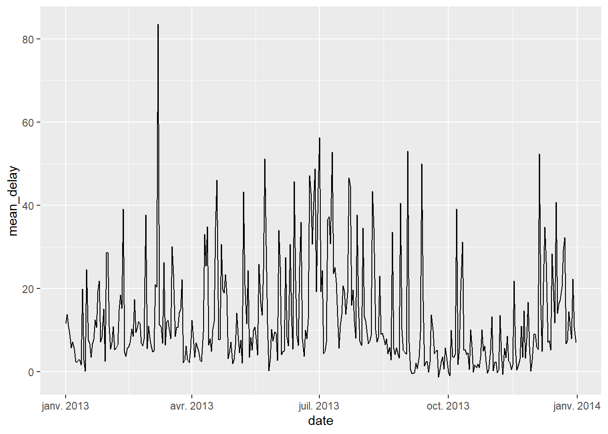
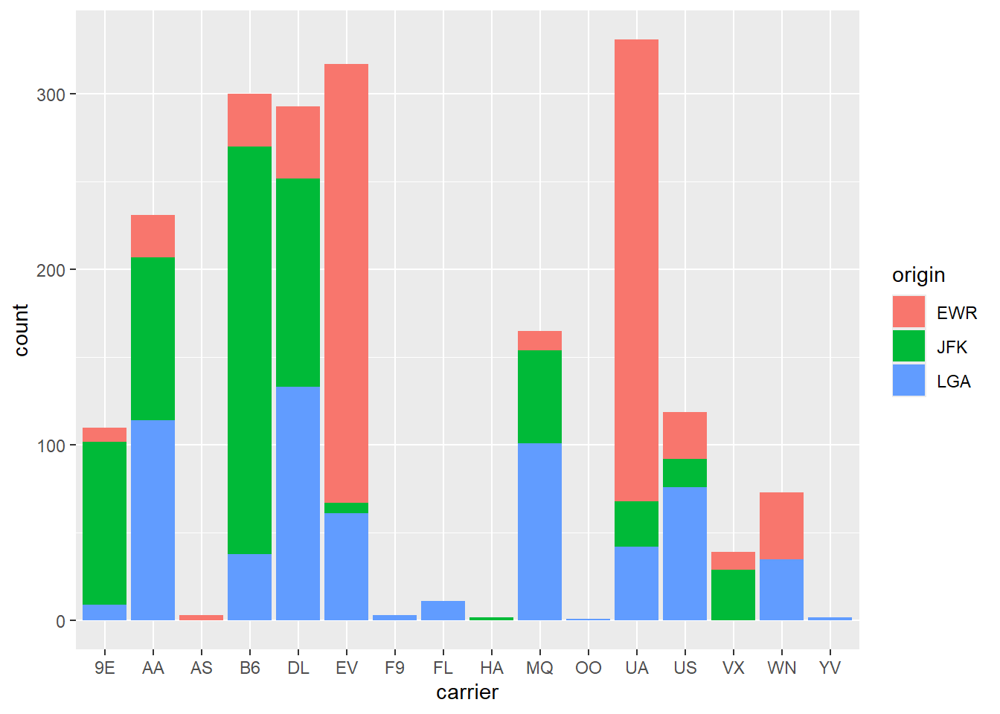
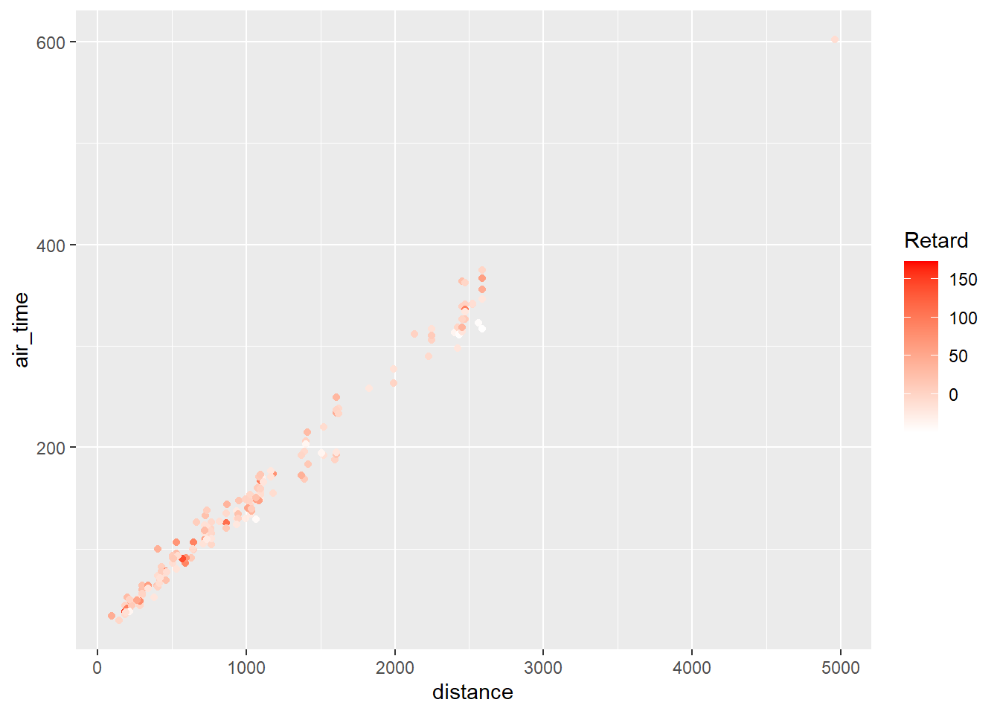

library(tidyverse)Visualisation avec ggplot2
1 Visualiser avec ggplot2
ggplot2 est une extension du tidyverse qui permet de générer des graphiques avec une syntaxe cohérente et puissante. Elle nécessite l’apprentissage d’un “mini-langage” supplémentaire, mais permet la construction de graphiques complexes de manière efficace.
Une des particularités de ggplot2 est qu’elle part du principe que les données relatives à un graphique sont stockées dans un tableau de données (data frame, tibble ou autre).
1.1 Préparation
ggplot2 fait partie du coeur du tidyverse, elle est donc chargée automatiquement avec :
On peut également la charger explicitement avec :
library(ggplot2)Dans cette partie, nous allons utiliser les données du package nycflights13, utilisées dans la partie précédente :
library(nycflights13)
## Chargement des trois tables
data(flights)
data(airports)
data(airlines)
# rp <- filter(
# rp2018,
# departement %in% c("Oise", "Rhône", "Hauts-de-Seine", "Lozère", "Bouches-du-Rhône")
# )Nous allons faire quelques ajouts et modification pour l’exerice.
1.2 Initialisation
Un graphique ggplot2 s’initialise à l’aide de la fonction ggplot(). Les données représentées graphiquement sont toujours issues d’un tableau de données (data frame ou tibble), qu’on passe en argument data à la fonction :
ggplot(data = flights)
## Ou, équivalent
ggplot(flights)On a défini la source de données, il faut maintenant ajouter des éléments de représentation graphique. Ces éléments sont appelés des geom, et on les ajoute à l’objet graphique de base avec l’opérateur +.
Un des geom les plus simples est geom_histogram. On peut l’ajouter de la manière suivante :
ggplot(flights) +
geom_histogram()Reste à indiquer quelle donnée nous voulons représenter sous forme d’histogramme. Cela se fait à l’aide d’arguments passés via la fonction aes(). Ici nous avons un paramètre à renseigner, x, qui indique la variable à représenter sur l’axe des x (l’axe horizontal). Ainsi, si on souhaite représenter la distribution des distances des différents vols (variable distance), on pourra faire :
ggplot(flights) +
geom_histogram(aes(x = distance))Si on veut représenter une autre variable, il suffit de changer la valeur de x. Par exemple avec le temps de vol :
ggplot(flights) +
geom_histogram(aes(x = air_time))
Note
Quand on spécifie une variable, inutile d’indiquer le nom du tableau de données sous la forme flights$air_time, car ggplot2 recherche automatiquement la variable dans le tableau de données indiqué avec le paramètre data. On peut donc se contenter de air_time.
Certains geom prennent plusieurs paramètres. Ainsi, si on veut représenter un nuage de points, on peut le faire en ajoutant un geom_point. On doit alors indiquer à la fois la position en x (la variable sur l’axe horizontal) et en y (la variable sur l’axe vertical) de ces points, il faut donc passer ces deux arguments à aes() :
flights %>%
slice_sample(n = 10000) %>%
ggplot() +
geom_point(aes(x = distance, y = air_time))Warning: Removed 276 rows containing missing values or values outside the scale range
(`geom_point()`).
Note
Ici, vous voyez que nous avons utiliser un pipe pour travailler les données avant de les représenter graphiquement, comme nous l’avons vu au point précédent. Il est donc tout à fait possible de terminer notre pipeline par un graphique. La différence de notation ici est qu’il n’est pas nécéssaire de préciser le données à utilisées dans le ggplot() puisqu’il va automatiquement y mettre ce qu’il a reçu du pipe %>%.
On peut modifier certains attributs graphiques d’un geom en lui passant des arguments supplémentaires. Par exemple, pour un nuage de points, on peut modifier la couleur des points avec l’argument color, leur taille avec l’argument size, et leur transparence avec l’argument alpha :
flights %>%
slice_sample(n = 10000) %>%
ggplot() +
geom_point(
aes(x = distance, y = air_time),
color = "darkgreen", size = 3, alpha = 0.3
)Warning: Removed 289 rows containing missing values or values outside the scale range
(`geom_point()`).On notera que dans ce cas les arguments sont dans la fonction geom mais à l’extérieur du aes(). Plus d’explications sur ce point dans quelques instants.
1.3 Exemples de geom
Il existe un grand nombre de geom, décrits en détail dans la documentation officielle. Outre les geom_histogram et geom_point que l’on vient de voir, on pourra noter les geom suivants.
1.3.1 geom_boxplot
geom_boxplot permet de représenter des boîtes à moustaches. On lui passe en y la variable numérique dont on veut étudier la répartition, et en x la variable qualitative contenant les classes qu’on souhaite comparer. Ainsi, si on veut comparer les distributions des retards au départ, pour les différents aéroports de New York (JFK, LGA ou EWR) :
flights %>%
filter(dep_delay < 60) %>%
slice_sample(n = 3000) %>%
ggplot() +
geom_boxplot(aes(x = origin, y = dep_delay))
Note
Ici, vous l’aurez peut être remarqué, nous avons exclu les retard supérieurs à 60 minutes. Cela permet simplement une meilleure lisibilité des données proches de 0.
On peut personnaliser la présentation avec différents argument supplémentaires comme fill ou color :
flights %>%
filter(dep_delay < 60) %>%
slice_sample(n = 3000) %>%
ggplot() +
geom_boxplot(aes(x = origin, y = dep_delay),
fill = "wheat", color = "tomato4"
)1.3.2 geom_violin
geom_violin est très semblable à geom_boxplot, mais utilise des graphes en violon à la place des boîtes à moustache.
flights %>%
filter(dep_delay >=0 & dep_delay < 60) %>%
slice_sample(n = 3000) %>%
ggplot() +
geom_violin(aes(x = origin, y = dep_delay))Les graphes en violon peuvent donner une lecture plus fine des différences de distribution selon les classes. Comme pour les graphiques de densité, on peut faire varier le niveau de “détail” de la représentation en utilisant l’argument bw (bande passante).
flights %>%
filter(dep_delay >=0 & dep_delay < 60) %>%
slice_sample(n = 3000) %>%
ggplot() +
geom_violin(aes(x = origin, y = dep_delay),
bw=2)1.3.3 geom_bar et geom_col
geom_bar permet de produire un graphique en bâtons (barplot). On lui passe en x la variable qualitative dont on souhaite représenter l’effectif de chaque modalité.
Par exemple, Si on veut afficher le nombre de vols au départ de chaque aéroport new-yorkais :
flights %>%
ggplot() +
geom_bar(aes(x = origin))Si on préfère avoir un graphique en barres horizontales, il suffit de passer la variable comme attribut y plutôt que x.
flights %>%
ggplot() +
geom_bar(aes(y = origin))
Une autre possibilité est d’utiliser coord_flip(), qui permet d’intervertir l’axe horizontal et l’axe vertical.
flights %>%
ggplot() +
geom_bar(aes(x = origin)) +
coord_flip()À noter que coord_flip() peut s’appliquer à n’importe quel graphique ggplot2.
Parfois, on a déjà calculé le tri à plat de la variable à représenter. Dans ce cas on souhaite représenter les effectifs directement, sans les calculer.
C’est le cas par exemple si on a les données sous la forme suivante dans un tableau de données nommé tab :
Dans ce cas on peut utiliser geom_col. Il faut alors spécifier, en plus de l’argument x, un argument y indiquant la variable contenant la hauteur des barres. Dans notre exemple, il s’agit de la variable n.
flights %>%
count(dest) %>%
arrange(desc(n)) %>%
slice_head(n=10) %>%
ggplot() +
geom_col(aes(x = dest, y = n))
Que ce soit pour geom_bar ou geom_col, on peut modifier l’apparence du graphique en passant des arguments supplémentaires comme fill ou width.
flights %>%
count(dest) %>%
arrange(desc(n)) %>%
slice_head(n=10) %>%
ggplot() +
geom_col(aes(x = dest, y = n),
fill = "darkblue", width = .5
)1.3.4 geom_text
geom_text permet d’afficher des étiquettes de texte. On doit lui fournir trois paramètres dans aes : x et y pour la position des étiquettes, et label pour leur texte.
Par exemple, si on souhaite représenter le nuage croisant les retard au départ et à l’arrivée, en affichant la compagnie à chaque fois, on peut faire :
flights %>%
slice_sample(n=500) %>%
ggplot() +
geom_text(
aes(x = dep_delay, y = arr_delay, label = carrier)
)On peut personnaliser l’apparence et la position du texte avec des arguments comme size, color, etc.
flights %>%
slice_sample(n=500) %>%
ggplot() +
geom_text(
aes(x = dep_delay, y = arr_delay, label = carrier),
color = "darkred", size = 2
)1.3.5 geom_label
geom_label est identique à geom_text, mais avec une présentation un peu différente.
flights %>%
slice_sample(n=500) %>%
ggplot() +
geom_label(
aes(x = dep_delay, y = arr_delay, label = carrier))1.3.6 geom_density
geom_density permet d’afficher l’estimation de densité d’une variable numérique. Son usage est similaire à celui de geom_histogram.
Ainsi, si on veut afficher la densité des retards à l’arrivée :
flights %>%
slice_sample(n=500) %>%
ggplot() +
geom_density(aes(x = arr_delay))Warning: Removed 13 rows containing non-finite outside the scale range
(`stat_density()`).On peut utiliser différents arguments pour ajuster le calcul de l’estimation de densité, parmi lesquels kernel et bw (voir la page d’aide de la fonction density pour plus de détails). bw (abbréviation de bandwidth, bande passante) permet de régler la “finesse” de l’estimation de densité, un peu comme le choix du nombre de classes dans un histogramme :
flights %>%
slice_sample(n=500) %>%
ggplot() +
geom_density(aes(x = arr_delay), bw = 1)Warning: Removed 12 rows containing non-finite outside the scale range
(`stat_density()`).1.3.7 geom_line
geom_line trace des lignes connectant les différentes observations entre elles. Il est notamment utilisé pour la représentation de séries temporelles. On passe à geom_line deux paramètres : x et y. Les observations sont alors connectées selon l’ordre des valeurs passées en x.
Nous voulons afficher le retard moyen au départ des vols selon les jours. Pour cela, nous allons commencer par recombiner les colonnes year, month et day en une date. Nous allons ensuite calculter le retard moyen pour chaque jour et les afficher :
flights %>%
mutate(date = make_date(year,month, day)) %>%
group_by(date) %>%
summarise(mean_delay = mean(dep_delay, na.rm = TRUE)) %>%
ggplot() +
geom_line(aes(x = date, y = mean_delay))
1.3.8 geom_hex et geom_bin2d
Lorsque le nombre de points est important, la représentation sous forme de nuage peut vite devenir illisible : la superposition des données empêche de voir précisément leur répartition.
ggplot(flights) +
geom_point(aes(x = distance, y = air_time))Warning: Removed 9430 rows containing missing values or values outside the scale range
(`geom_point()`).Dans ces cas-là, on peut utiliser geom_bin2d, qui va créer une grille sur toute la zone du graphique et colorier chaque carré selon le nombre de points qu’il contient (les carrés n’en contenant aucun restant transparents).
ggplot(flights) +
geom_bin2d(aes(x = distance, y = air_time))Warning: Removed 9430 rows containing non-finite outside the scale range
(`stat_bin2d()`).Une variante fonctionnant de manière très semblable est geom_hex, qui elle crée une grille constituée d’hexagones.
ggplot(flights) +
geom_hex(aes(x = distance, y = air_time))Warning: Removed 9430 rows containing non-finite outside the scale range
(`stat_binhex()`).Dans les deux cas, on peut faire varier le nombre de zones, et donc la finesse du “quadrillage”, en utilisant l’argument bins (dont la valeur par défaut est 30).
ggplot(flights) +
geom_bin2d(
aes(x = distance, y = air_time),
bins = 50
)Warning: Removed 9430 rows containing non-finite outside the scale range
(`stat_bin2d()`).
ggplot(flights) +
geom_hex(
aes(x = distance, y = air_time),
bins = 70
)Warning: Removed 9430 rows containing non-finite outside the scale range
(`stat_binhex()`).1.4 Mappages
Un mappage, dans ggplot2, est une mise en relation entre un attribut graphique du geom (position, couleur, taille…) et une variable du tableau de données.
Ces mappages sont passés aux différents geom via la fonction aes() (abbréviation d’aesthetic).
1.4.1 Exemples de mappages
On a déjà vu les mappages x et y pour un nuage de points. Ceux-ci signifient que la position d’un point donné horizontalement (x) et verticalement (y) dépend de la valeur des variables passées comme arguments x et y dans aes().
flights %>%
slice_sample(n=2000) %>%
ggplot() +
geom_point(
aes(x = distance, y = air_time)
)Warning: Removed 49 rows containing missing values or values outside the scale range
(`geom_point()`).Mais on peut ajouter d’autres mappages. Par exemple, color permet de faire varier la couleur des points automatiquement en fonction des valeurs d’une troisième variable. Ainsi, on peut vouloir colorer les points selon l’aéroport de départ.
flights %>%
slice_sample(n=2000) %>%
ggplot() +
geom_point(
aes(x = distance, y = air_time, color=origin)
)Warning: Removed 69 rows containing missing values or values outside the scale range
(`geom_point()`).On peut aussi faire varier la taille des points avec size. Ici, la taille dépend du retard :
flights %>%
slice_sample(n=2000) %>%
ggplot() +
geom_point(
aes(x = distance, y = air_time, color=origin, size=dep_delay)
)Warning: Removed 61 rows containing missing values or values outside the scale range
(`geom_point()`).On peut même associer la transparence des points à une variable avec alpha :
flights %>%
slice_sample(n=2000) %>%
ggplot() +
geom_point(
aes(x = distance, y = air_time, color=origin, size=dep_delay, alpha=arr_delay)
)Warning: Removed 50 rows containing missing values or values outside the scale range
(`geom_point()`).Chaque geom possède sa propre liste de mappages.
1.4.2 aes() or not aes() ?
Comme on l’a déjà vu, parfois on souhaite changer un attribut sans le relier à une variable : c’est le cas par exemple si on veut représenter tous les points en rouge. Dans ce cas on utilise toujours l’attribut color, mais comme il ne s’agit pas d’un mappage, on le définit à l’extérieur de la fonction aes().
flights %>%
slice_sample(n=2000) %>%
ggplot() +
geom_point(
aes(x = distance, y = air_time),
color="red"
)Warning: Removed 57 rows containing missing values or values outside the scale range
(`geom_point()`).Par contre, si on veut faire varier la couleur en fonction des valeurs prises par une variable, on réalise un mappage, et on doit donc placer l’attribut color à l’intérieur de aes().
flights %>%
slice_sample(n=2000) %>%
ggplot() +
geom_point(
aes(x = distance, y = air_time, color=origin),
)Warning: Removed 53 rows containing missing values or values outside the scale range
(`geom_point()`).On peut mélanger attributs liés à une variable (mappage, donc dans aes()) et attributs constants (donc à l’extérieur). Dans l’exemple suivant, la taille varie en fonction de la variable pop_tot, mais la couleur est constante pour tous les points.
flights %>%
slice_sample(n=2000) %>%
ggplot() +
geom_point(
aes(x = distance, y = air_time, size=dep_delay),
color="royalblue"
)Warning: Removed 57 rows containing missing values or values outside the scale range
(`geom_point()`).
Warning
La règle est donc simple mais très importante :
Si on établit un lien entre les valeurs d’une variable et un attribut graphique, on définit un mappage, et on le déclare dans aes(). Sinon, on modifie l’attribut de la même manière pour tous les points, et on le définit en-dehors de la fonction aes().
1.4.3 geom_bar et position
Un des mappages possibles de geom_bar est l’attribut fill, qui permet de tracer des barres de couleur différentes selon les modalités d’une deuxième variable :
flights %>%
slice_sample(n=2000) %>%
ggplot() +
geom_bar(aes(x = carrier, fill = origin))
L’attribut position de geom_bar permet d’indiquer comment les différentes barres doivent être positionnées. Par défaut l’argument vaut position = "stack" et elles sont donc “empilées”. Mais on peut préciser position = "dodge" pour les mettre côte à côte.
flights %>%
slice_sample(n=2000) %>%
ggplot() +
geom_bar(aes(x = carrier, fill = origin),
position = "dodge"
)Ou encore position = "fill" pour représenter non plus des effectifs, mais des proportions.
flights %>%
slice_sample(n=2000) %>%
ggplot() +
geom_bar(aes(x = carrier, fill = origin),
position = "fill"
)Là encore, on peut utiliser coord_flip() si on souhaite une visualisation avec des barres horizontales.
flights %>%
slice_sample(n=2000) %>%
ggplot() +
geom_bar(aes(x = carrier, fill = origin),
position = "fill"
) +
coord_flip()1.5 Représentation de plusieurs geom
On peut représenter plusieurs geom simultanément sur un même graphique, il suffit de les ajouter à tour de rôle avec l’opérateur +.
Par exemple, on peut superposer la position des points au-dessus d’un boxplot. On va pour cela ajouter un geom_point après avoir ajouté notre geom_boxplot.
flights %>%
slice_sample(n=2000) %>%
filter(dep_delay <60) %>%
ggplot() +
geom_boxplot(aes(x = carrier, y = dep_delay)) +
geom_point(
aes(x = carrier, y = dep_delay),
col = "red", alpha = 0.2
)
Note
Quand une commande ggplot2 devient longue, il peut être plus lisible de la répartir sur plusieurs lignes. Dans ce cas, il faut penser à placer l’opérateur + en fin de ligne, afin que R comprenne que la commande n’est pas complète et qu’il prenne en compte la suite.
Pour un résultat un peu plus lisible, on peut remplacer geom_point par geom_jitter, qui disperse les points horizontalement et facilite leur visualisation.
flights %>%
slice_sample(n=2000) %>%
filter(dep_delay <60) %>%
ggplot() +
geom_boxplot(aes(x = carrier, y = dep_delay)) +
geom_jitter(
aes(x = carrier, y = dep_delay),
col = "red", alpha = 0.2
)Pour simplifier un peu le code, plutôt que de déclarer les mappages dans chaque geom, on peut les déclarer dans l’appel à ggplot(). Ils seront automatiquement “hérités” par les geom ajoutés (sauf s’ils redéfinissent les mêmes mappages).
flights %>%
slice_sample(n=2000) %>%
filter(dep_delay <60) %>%
ggplot(aes(x = carrier, y = dep_delay)) +
geom_boxplot() +
geom_jitter(
col = "red", alpha = 0.2
)Autre exemple, on peut vouloir ajouter à un nuage de points une ligne de régression linéaire à l’aide de geom_smooth :
flights %>%
slice_sample(n=2000) %>%
ggplot(aes(x = dep_delay, y = arr_delay)) +
geom_point(alpha = 0.2) +
geom_smooth(method = "lm")`geom_smooth()` using formula = 'y ~ x'Warning: Removed 57 rows containing non-finite outside the scale range
(`stat_smooth()`).Warning: Removed 57 rows containing missing values or values outside the scale range
(`geom_point()`).Et on peut même superposer une troisième visualisation de la répartition des points dans l’espace avec geom_density2d :
flights %>%
slice_sample(n=2000) %>%
filter(dep_delay < 100 & arr_delay < 100) %>%
ggplot(aes(x = dep_delay, y = arr_delay)) +
geom_point(alpha = 0.2) +
geom_density2d(color = "red") +
geom_smooth(method = "lm")`geom_smooth()` using formula = 'y ~ x'1.6 Faceting
Le faceting permet d’effectuer plusieurs fois le même graphique selon les valeurs d’une ou plusieurs variables qualitatives.
Par exemple, on a vu qu’on peut représenter l’histogramme des retards au départ avec le code suivant :
flights %>%
slice_sample(n=2000) %>%
filter(dep_delay < 60) %>%
ggplot() +
geom_histogram(aes(x=dep_delay))On souhaite comparer cette distribution selon la compagnie aérienne, et donc faire un histogramme pour chacune d’elles. C’est ce que permettent les fonctions facet_wrap et facet_grid.
facet_wrap prend un paramètre de la forme vars(variable), où variable est le nom de la variable en fonction de laquelle on souhaite faire les différents graphiques. Ceux-ci sont alors affichés les uns à côté des autres et répartis automatiquement dans la page.
flights %>%
slice_sample(n=2000) %>%
filter(dep_delay < 60) %>%
ggplot() +
geom_histogram(aes(x=dep_delay)) +
facet_wrap(vars(carrier))Pour facet_grid, les graphiques sont disposés selon une grille. La fonction prend alors deux arguments, rows et cols, auxquels on passe les variables à afficher en ligne ou en colonne via la fonction vars().
flights %>%
slice_sample(n=2000) %>%
filter(dep_delay < 60) %>%
ggplot() +
geom_histogram(aes(x=dep_delay)) +
facet_grid(rows = vars(carrier))Un des intérêts du faceting dans ggplot2 est que tous les graphiques générés ont les mêmes échelles, ce qui permet une comparaison directe.
Enfin, notons qu’on peut même faire du faceting sur plusieurs variables à la fois. On peut par exemple faire des histogrammes des reatrds au départ en fonction des compagnies aérienne (ici les 5 plus fréquentes) et des aéroports de départ :
flights %>%
add_count(carrier) %>%
filter(n %in% tail(sort(unique(n)),5)) %>%
filter(dep_delay < 60) %>%
ggplot() +
geom_histogram(aes(x=dep_delay)) +
facet_grid(
rows = vars(origin), cols = vars(carrier)
)1.7 Scales
On a vu qu’avec ggplot2 on définit des mappages entre des attributs graphiques (position, taille, couleur, etc.) et des variables d’un tableau de données. Ces mappages sont définis, pour chaque geom, via la fonction aes().
Les scales dans ggplot2 permettent de modifier la manière dont un attribut graphique va être relié aux valeurs d’une variable, et dont la légende correspondante va être affichée. Par exemple, pour l’attribut color, on pourra définir la palette de couleur utilisée. Pour size, les tailles minimales et maximales, etc.
Pour modifier une scale existante, on ajoute un nouvel élément à notre objet ggplot2 avec l’opérateur +. Cet élément prend la forme scale_<attribut>_<type>.
Voyons tout de suite quelques exemples.
1.7.1 scale_size
Si on souhaite modifier les tailles minimales et maximales des objets quand on a effectué un mappage de type size, on peut utiliser la fonction scale_size et son argument range.
flights %>%
slice_sample(n=200) %>%
ggplot() +
geom_point(aes(x = distance, y = air_time, size = arr_delay)) +
scale_size(range = c(0, 20))Warning: Removed 5 rows containing missing values or values outside the scale range
(`geom_point()`).À comparer par exemple à :
flights %>%
slice_sample(n=200) %>%
ggplot() +
geom_point(aes(x = distance, y = air_time, size = arr_delay)) +
scale_size(range = c(2, 8))Warning: Removed 9 rows containing missing values or values outside the scale range
(`geom_point()`).On peut ajouter d’autres paramètres à scale_size. Le premier argument est toujours le titre donné à la légende.
flights %>%
slice_sample(n=200) %>%
ggplot() +
geom_point(aes(x = distance, y = air_time, size = arr_delay)) +
scale_size(
"Retard",
range = c(0, 8)
)Warning: Removed 4 rows containing missing values or values outside the scale range
(`geom_point()`).On peut aussi définir manuellement les éléments de légende représentés.
flights %>%
slice_sample(n=200) %>%
ggplot() +
geom_point(aes(x = distance, y = air_time, size = arr_delay),
alpha=0.4) +
scale_size(
"Retard",
range = c(0, 8),
breaks = c(0, 10, 30, 45, 60, 120)
)Warning: Removed 8 rows containing missing values or values outside the scale range
(`geom_point()`).
1.7.2 scale_x, scale_y
Les scales scale_x_<type> et scale_y_<type> modifient les axes x et y du graphique.
scale_x_continuous et scale_y_continuous s’appliquent lorsque la variable x ou y est numérique (quantitative).
C’est le cas de notre nuage de points croisant la distance et le temps en vol.
flights %>%
slice_sample(n=200) %>%
ggplot() +
geom_point(aes(x = distance, y = air_time))Warning: Removed 6 rows containing missing values or values outside the scale range
(`geom_point()`).On peut vouloir forcer les axes x et y à s’étendre sur des plages de valeurs précises. On peut le faire en ajoutant un élément scale_x_continuous et un élément scale_y_continuous, et en utilisant leur argument limits.
flights %>%
slice_sample(n=200) %>%
ggplot() +
geom_point(aes(x = distance, y = air_time)) +
scale_x_continuous(limits = c(0, 4500)) +
scale_y_continuous(limits = c(0, 450))Warning: Removed 6 rows containing missing values or values outside the scale range
(`geom_point()`).Là aussi, on peut modifier les étiquettes des axes en indiquant une chaîne de caractères en premier argument.
flights %>%
slice_sample(n=200) %>%
ggplot() +
geom_point(aes(x = distance, y = air_time)) +
scale_x_continuous("Distance parcourue (en miles)", limits = c(0, 4000)) +
scale_y_continuous("Durée du vol (en minutes)", limits = c(0, 400))Warning: Removed 6 rows containing missing values or values outside the scale range
(`geom_point()`).
On peut utiliser scale_x_log10 et scale_y_log10 pour passer un axe à une échelle logarithmique.
flights %>%
slice_sample(n=200) %>%
ggplot() +
geom_point(aes(x = distance, y = air_time)) +
scale_x_log10("Distance")Warning: Removed 5 rows containing missing values or values outside the scale range
(`geom_point()`).scale_x_discrete et scale_y_discrete s’appliquent lorsque l’axe correspond à une variable discrète (qualitative). C’est le cas par exemple de l’axe des x dans un diagramme en barres.
flights %>%
slice_sample(n=2000) %>%
ggplot() +
geom_bar(aes(x = carrier)) +
scale_x_discrete("Compagnie")L’argument limits de scale_x_discrete permet d’indiquer quelles valeurs sont affichées et dans quel ordre.
flights %>%
slice_sample(n=2000) %>%
ggplot() +
geom_bar(aes(x = carrier)) +
scale_x_discrete("Compagnie", limits = c("9E", "AA", "AS"))Warning: Removed 1705 rows containing non-finite outside the scale range
(`stat_count()`).1.7.3 scale_color, scale_fill
Ces scales permettent, entre autre, de modifier les palettes de couleur utilisées pour le dessin (color) ou le remplissage (fill) des éléments graphiques. Dans ce qui suit, pour chaque fonction scale_color présentée il existe une fonction scale_fill équivalente et avec en général les mêmes arguments.
1.7.3.1 Variables quantitatives
Le graphique suivant colore les points selon la valeur d’une variable numérique quantitative (ici la part de chômeurs) :
flights %>%
slice_sample(n=200) %>%
ggplot() +
geom_point(aes(x = distance, y = air_time, color=arr_delay))Warning: Removed 6 rows containing missing values or values outside the scale range
(`geom_point()`).On peut modifier les couleurs utilisées avec les arguments low et high de la fonction scale_color_gradient. Ici on souhaite que la valeur la plus faible soit blanche, et la plus élevée rouge :
flights %>%
slice_sample(n=200) %>%
ggplot() +
geom_point(aes(x = distance, y = air_time, color=arr_delay)) +
scale_color_gradient("Retard", low = "white", high = "red")Warning: Removed 7 rows containing missing values or values outside the scale range
(`geom_point()`).
On peut aussi utiliser des palettes prédéfinies. L’une des plus populaires est la palette viridis, accessible en utilisant scale_color_viridis_c :
flights %>%
slice_sample(n=200) %>%
ggplot() +
geom_point(aes(x = distance, y = air_time, color=arr_delay)) +
scale_color_viridis_c("Retard")Warning: Removed 2 rows containing missing values or values outside the scale range
(`geom_point()`).viridis propose également trois autres palettes, magma, inferno et plasma, accessibles via l’argument option :
flights %>%
slice_sample(n=200) %>%
ggplot() +
geom_point(aes(x = distance, y = air_time, color=arr_delay)) +
scale_color_viridis_c("Retard", option = "plasma")Warning: Removed 6 rows containing missing values or values outside the scale range
(`geom_point()`).On peut aussi utiliser scale_color_distiller, qui transforme une des palettes pour variable qualitative de scale_color_brewer en palette continue pour variable numérique :
flights %>%
slice_sample(n=200) %>%
ggplot() +
geom_point(aes(x = distance, y = air_time, color=arr_delay)) +
scale_color_distiller("Retard", palette = "Spectral")Warning: Removed 6 rows containing missing values or values outside the scale range
(`geom_point()`).La liste des palettes de scale_color_brewer est indiquée en fin de section suivante.
1.7.3.2 Variables qualitatives
Si on a fait un mappage avec une variable discrète (qualitative), comme ici avec les compagnies :
flights %>%
slice_sample(n=200) %>%
ggplot() +
geom_point(aes(x = distance, y = air_time, color=carrier))Warning: Removed 7 rows containing missing values or values outside the scale range
(`geom_point()`).Une première possibilité est de modifier la palette manuellement avec scale_color_manual et son argument values :
flights %>%
add_count(carrier) %>%
filter(n %in% tail(sort(unique(n)),5)) %>%
slice_sample(n=200) %>%
ggplot() +
geom_point(aes(x = distance, y = air_time, color=carrier)) +
scale_color_manual(
"Compagnie",
values = c("red", "#FFDD45", rgb(0.1, 0.2, 0.6), "darkgreen", "grey80")
)Warning: Removed 3 rows containing missing values or values outside the scale range
(`geom_point()`).
Note
L’exemple précédent montre plusieurs manières de définir manuellement des couleurs dans R :
- Par code hexadécimal :
"#FFDD45" - En utilisant la fonction
rgbet en spécifiant les composantes rouge, vert, bleu par des nombres entre 0 et 1 (et optionnellement une quatrième composante d’opacité, toujours entre 0 et 1) :rgb(0.1,0.2,0.6) - En donnant un nom de couleur :
"red","darkgreen"
La liste complète des noms de couleurs connus par R peut être obtenu avec la fonction colors(). Vous pouvez aussi retrouver en ligne la liste des couleurs et leur nom (PDF).
Il est cependant souvent plus pertinent d’utiliser des palettes prédéfinies. Celles du site Colorbrewer, initialement prévues pour la cartographie, permettent une bonne lisibilité, et peuvent être adaptées pour certains types de daltonisme.
Ces palettes s’utilisent via la fonction scale_color_brewer, en passant le nom de la palette via l’argument palette. Par exemple, si on veut utiliser la palette Set1 :
flights %>%
add_count(carrier) %>%
filter(n %in% tail(sort(unique(n)),5)) %>%
slice_sample(n=200) %>%
ggplot() +
geom_point(aes(x = distance, y = air_time, color=carrier)) +
scale_color_brewer("Département", palette = "Set1")Warning: Removed 4 rows containing missing values or values outside the scale range
(`geom_point()`).Le graphique suivant, accessible via la fonction display.brewer.all(), montre la liste de toutes les palettes disponibles via scale_color_brewer. Elles sont réparties en trois familles : les palettes séquentielles (pour une variable quantitative), les palettes qualitatives, et les palettes divergentes (typiquement pour une variable quantitative avec une valeur de référence, souvent 0, et deux palettes continues distinctes pour les valeurs inférieures et pour les valeurs supérieures).
RColorBrewer::display.brewer.all()Il existe d’autres méthodes pour définir les couleurs : pour plus d’informations on pourra se reporter à l’article de la documentation officielle sur ce sujet.
1.8 Thèmes
Les thèmes permettent de contrôler l’affichage de tous les éléments du graphique qui ne sont pas reliés aux données : titres, grilles, fonds, etc.
Il existe un certain nombre de thèmes préexistants, par exemple le thème theme_bw :
flights %>%
slice_sample(n=2000) %>%
filter(dep_delay < 60) %>%
ggplot() +
geom_histogram(aes(x=dep_delay)) +
theme_bw()Ou le thème theme_minimal :
flights %>%
slice_sample(n=2000) %>%
filter(dep_delay < 60) %>%
ggplot() +
geom_histogram(aes(x=dep_delay)) +
theme_minimal()On peut cependant modifier manuellement les différents éléments. Par exemple, les fonctions ggtitle, xlab et ylab permettent d’ajouter ou de modifier le titre du graphique, ainsi que les étiquettes des axes x et y :
flights %>%
slice_sample(n=2000) %>%
filter(dep_delay < 60) %>%
ggplot() +
geom_histogram(aes(x=dep_delay)) +
ggtitle("Un bien bel histogramme") +
xlab("Retards") +
ylab("Effectif")1.9 Ressources
La documentation officielle (en anglais) de ggplot2 est très complète et accessible en ligne.
Une “antisèche” (en anglais) résumant en deux pages l’ensemble des fonctions et arguments et disponible soit directement depuis RStudio (menu Help > Cheatsheets > Data visualization with ggplot2) ou en ligne.
Les parties Data visualisation et Graphics for communication de l’ouvrage en ligne R for data science, de Hadley Wickham, sont une très bonne introduction à ggplot2.
Plusieurs ouvrages, toujours en anglais, abordent en détail l’utilisation de ggplot2, en particulier ggplot2: Elegant Graphics for Data Analysis, toujours de Hadley Wickham, et le R Graphics Cookbook de Winston Chang.
Le site associé à ce dernier ouvrage comporte aussi pas mal d’exemples et d’informations intéressantes.
Enfin, si ggplot2 présente déjà un très grand nombre de fonctionnalités, il existe aussi un système d’extensions permettant d’ajouter des geom, des thèmes, etc. Le site ggplot2 extensions est une très bonne ressource pour les parcourir et les découvrir, notamment grâce à sa galerie.
1.10 Exercices
Pour les exercices nous allons travailler avec le jeu de données diamonds
data("diamonds")Exercice 1
Faire un nuage de points croisant le prix en fonction de la masse (carat).
Exercice 2
Faire un nuage de points croisant le prix et la masse, avec les points en rouge et de transparence 0.2.
Exercice 3
Représenter le prix selon la qualité de la taille (variable cut) sous forme de boîtes à moustaches.
Exercice 4
Représenter le nombre de diamants, selon la catégorie de taille (cut) sous la forme d’un diagramme en bâtons.
Exercice 5
Faire un nuage de points croisant le prix et la masse. Faire varier la couleur selon la catégorie de taille (cut).
Sur le même graphique, rendre les points transparents en plaçant leur opacité à 0.5.
Exercice 6
À l’aide d’un boxplot, représentez le prix en fonction de la coupe. Faites varier la couleur en fonction de la couleur du diamant (color).
Exercice 7
À l’aide d’un diagramme en bâton, représentez le nombre de diamants par type de taille (cut). Faites varier la couleur pour représenter les différentes couleurs de diamants.
Faire varier la valeur du paramètre position pour afficher les barres les unes à côté des autres.
Changer à nouveau la valeur du paramètre position pour représenter les proportions de communes de chaque département pour chaque catégorie de taille.
Exercice 8
Faire un nuage de points représentant en abscisse la variable x et en ordonnée la variable y. Représenter ce nuage par des graphiques différents selon le type de taille en utilisant facet_grid.
Sur le même graphique, filtrez les valeurs extrèmes
Exercice 9
Reprenez les différents exercices ajoutant des titres et des légendes.